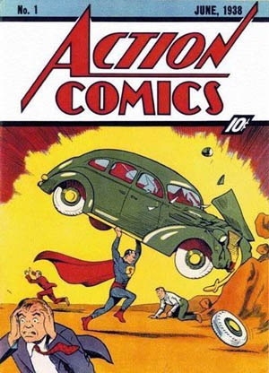
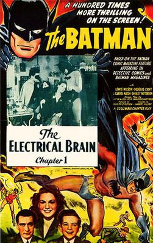
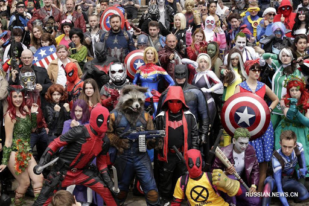

Считается, что первые комиксы появились в XVI-XVII веках в Валенсии и Барселоне. В основном это были гравюры о жизни святых и рисунки на светские сюжеты. Комиксы являются одним из самых заметных культурных феноменов ХХ века. Считается, что первые комиксы появились в XVI-XVII веках в Валенсии и Барселоне. В основном это были гравюры о жизни святых и рисунки на светские сюжеты. Родиной комиксов в современном виде принято считать США. Первые работы стали появляться в журналах в конце XVIII века. Это были небольшие юмористические рассказы буквально на пару страниц. Серьезное развитие комиксы, а вернее уже графические новеллы, получили в начале XIX века. В 1934 году, в калифорнии, была основана компания DC Comics. И в 1938 году на страницах журнала ActionComics впервые появился Супермен.

Этот год принято считать началом «Золотого века» графических новелл. Комикс (от англ. comic «смешной») изначально простые и юмористические истории, но именно DC одними из первых начали писать мрачные, серьезные сюжеты, отражающие реалии современного общества, поднимали серьезные темы, которые не оставляли равнодушными читателей любых возрастов. Чуть позднее, в 1939 году, на свет появилась компания Marvel. Спустя несколько лет Марвел становится одной из двух самых крупных американских компаний, выпускающих комиксы, наравне с ics. С появлением первых серьезных работ комиксы попытались выбраться за пределы страниц журналов. Первые фильмы о Бэтмене стали появляться еще в 40-х годах ХХ века. Они конечно же были комичны, но в то время все равно имели успех и вызывали интерес у аудитории.

Выходили и книги по различным вселенным. Некоторые из них можно почитать у нас в библиотеке. Но настоящий прорыв случился в 2008 году. Усилиями режиссера Джона Фавро, главы Марвел Кевина Файги и сценариста Стена Ли, на свет вышел Железный человек. Этот фильм положил начало целой серии невероятно популярных и дорогих фильмов по вселенной Марвел. О Человеке-Пауке, Таносе или Торе, я думаю, знают люди даже далекие от комиксов и супергеройских фильмов. О Стене Ли вообще стоит сказать отдельно. Это каноничная фигура в мире комиксов, а в последние годы жизни его имя так или иначе слышал каждый. Стен Ли был долгое время главным редактором Марвел и именно он стоял у истоков «Мстителей», «Человека-паука» и многих других работ. Если говорить о фильмах и книгах по вселенной DC, то тут все немного иначе. Фильмы Марвел — это попкорновые аттракционы, которые завораживают красивой картинкой, звездным актерским составом и понятны аудитории любых возрастов. Фильмы DC пытались играть в серьезное кино, с сильным сюжетом, с глубокой идеей и т.д., а так же изначально были нацелены на взрослую аудиторию. Кристофер Нолан со своей трилогией о «Темном рыцаре» положил начало удачным проектам по вселенной DC. Сильный сценарий и актерский состав сделали свое дело и в 2005 году фильмы по вселенной DC опять начали шуметь на экранах кинотеатров. Игра Хита Леджера и его посмертный оскар достойны отдельной статьи.
Ну и 2019 год. Джокер Тодда Филлипса – тут комментарии излишни. В России тоже есть интересные работы. Например, Майор Гром. Это комикс Евгения Федотова, о детективе Громе и запутанных делах. Комикс пропитан Российской романтикой и будет близок многим читателям. и кстати его также можно почитать у нас. Стоит сказать, что помимо книг и фильмов у комиксной субкультуры есть и такие мероприятия как Comic Con. Они проходят по всему миру, там собираются фанаты комиксов, художники, косплееры. Многие контесты посещают знаменитые актеры, которые играли тех или иных персонажей.

Каждый может найти для себя любимую вселенную, персонажа или отдельную историю. И самое главное добро всегда побеждает зло! (ну или почти всегда).